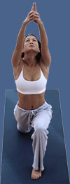
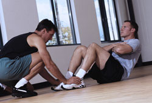

Die Vita-Oase bietet ein umfassendes Trainingsprogramm und individuelle Betreuung für jedermann in einer positiven Atmosphäre.
Wir haben für Sie ein Fitnesskonzept entwickelt, für all jene, die zum ersten Mal in einem Fitnessstudio aktiv werden wollen oder aber auch für Personen, die ihr Wissen um die Grundlagen des gesundheitsorientierten und ganzheitlichen Fitnesstrainings wieder auffrischen möchten.